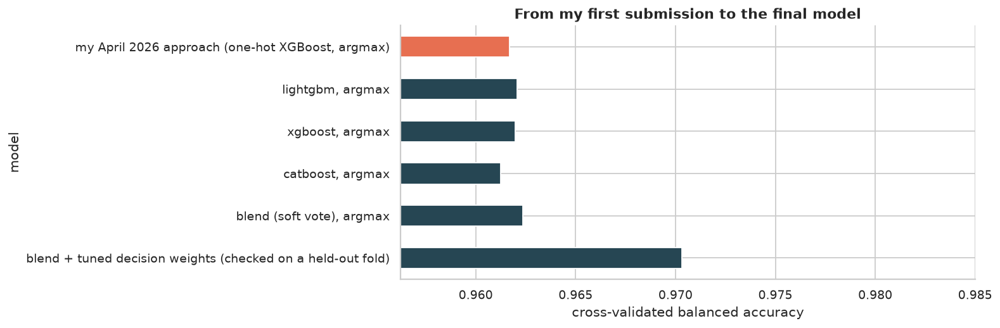
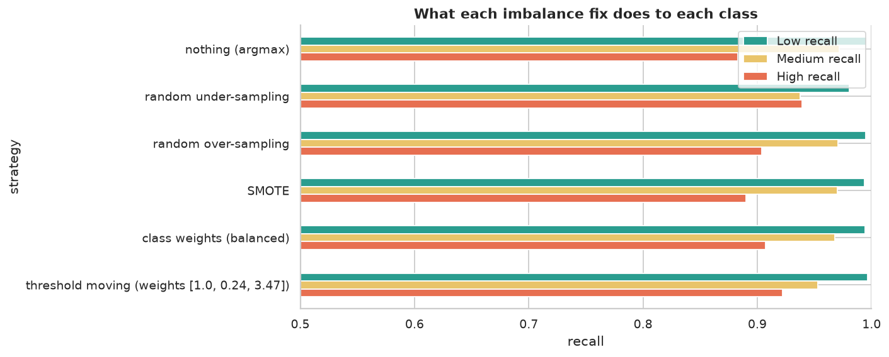
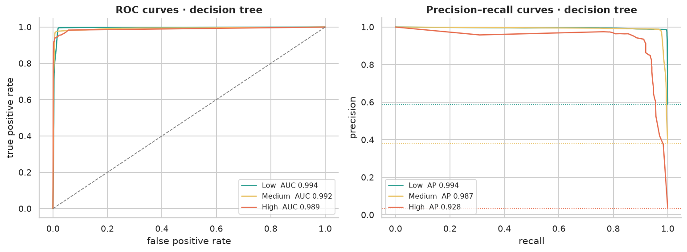
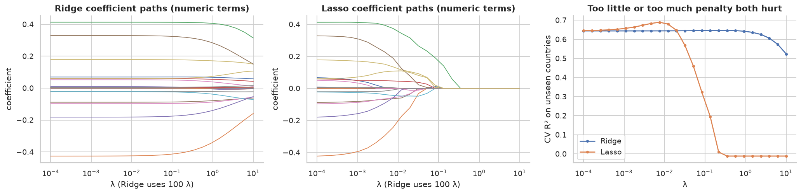
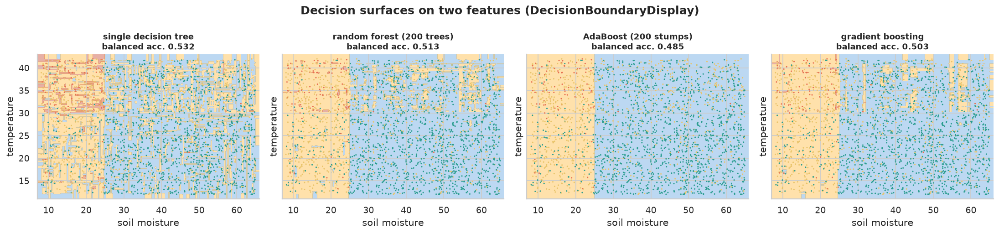
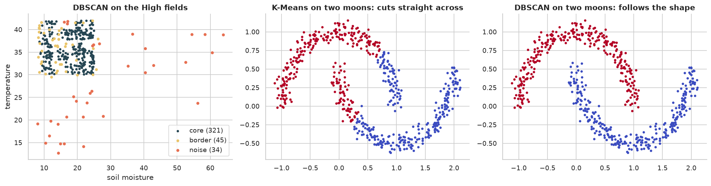

CSE274 · Applied Machine Learning
From my first Kaggle submission to a model that beats it.
Six notebooks, one per unit of CSE274, built on the Kaggle Playground S6E4 Predicting Irrigation Need competition (630,000 fields, scored on balanced accuracy). My first entry in April 2026, a plain XGBoost on one-hot features, scored 0.960. This project rebuilds the pipeline properly, unit by unit: leakage-safe pre-processing, engineered features, every classifier in the syllabus, ensembles of LightGBM, XGBoost and CatBoost, and decision weights tuned for the rare High class.
Regression uses a second Kaggle dataset from the same domain (crop yields for 101 countries, 1990–2013).
Notebooks
Data pre-processing
8 syllabus topics
02 · UNIT IIFeature engineering and dimensionality reduction
8 syllabus topics
03 · UNIT IIILinear and probabilistic classification models
9 syllabus topics
04 · UNIT IVRegression
10 syllabus topics
05 · UNIT VEnsemble learning, tuning and the final submission
8 syllabus topics
06 · UNIT VIUnsupervised learning
7 syllabus topics
Results






Run it yourself
git clone https://github.com/LuShadowX/Irrigate && cd Irrigate pip install -e ".[dev]" kaggle competitions download -c playground-series-s6e4 -p data && unzip data/*.zip -d data kaggle datasets download -d patelris/crop-yield-prediction-dataset -p data/yield --unzip pytest python -m irrigate.submit --baseline # final models + submissions/submission.csv jupyter lab notebooks/
Course map
All 50 topics of the CSE274 syllabus, unit by unit, with the notebook section that covers each one.
What the course description says students learn
| Students learn to … | Where | |
|---|---|---|
| D1 | explain types of data and data pre-processing concepts | notebook 01 |
| D2 | apply feature engineering | notebook 02 |
| D3 | use dimensionality reduction techniques | notebook 02 |
| D4 | compare and implement nonlinear (classification) models with appropriate evaluation metrics | notebook 03 |
| D5 | compare and implement regression models with appropriate evaluation metrics | notebook 04 |
| D6 | compare and implement ensemble models with appropriate evaluation metrics | notebook 05 |
| D7 | compare and implement clustering models with appropriate evaluation metrics | notebook 06 |
Unit I: Data Pre-processing8 topics
| Syllabus topic | Where |
|---|---|
| Introduction to data and the pre-processing pipeline | 01 § 1 |
| Types of data: qualitative, quantitative, structured vs unstructured | 01 § 2 |
| Data leakage: causes and prevention | 01 § 3 |
| Missing values: mechanisms (MCAR, MAR, MNAR) and handling techniques | 01 § 4 |
| Outliers: detection and treatment | 01 § 5 |
| Categorical data: one-hot, label (ordinal), frequency encoding | 01 § 6 |
| Standardisation (z-score) and min-max normalisation | 01 § 7 |
| Class imbalance: resampling, SMOTE, algorithmic approaches | 01 § 8 |
Unit II: Feature Engineering and Dimensionality Reduction8 topics
| Syllabus topic | Where |
|---|---|
| Feature selection: filter methods | 02 § 1A |
| Feature selection: wrapper methods | 02 § 1B |
| Feature selection: embedded methods | 02 § 1C |
| Feature extraction and creating new features | 02 § 2A–2B |
| Aggregation features | 02 § 2C |
| Curse of dimensionality; dimensionality reduction | 02 § 3 |
| Principal component analysis (PCA) | 02 § 4A |
| Linear discriminant analysis (LDA); PCA vs LDA | 02 § 4B |
Unit III: Linear & Probabilistic Classification Models9 topics
| Syllabus topic | Where |
|---|---|
| Introduction to supervised learning | 03 § 1 |
| Perceptron (from scratch) | 03 § 2.1 |
| Logistic regression | 03 § 2.2 |
| Naïve Bayes classifier | 03 § 3.1 |
| K-nearest neighbours | 03 § 4.1 |
| Decision tree | 03 § 4.2 |
| Support vector machine (linear and RBF) | 03 § 4.3 |
| Confusion matrix and basic metrics | 03 § 5.1–5.2 |
| ROC and precision–recall curves | 03 § 5.3 |
Unit IV: Regression10 topics
| Syllabus topic | Where |
|---|---|
| Regression vs classification | 04 § 1 |
| Bias–variance considerations in regression | 04 § 2 |
| Simple linear regression | 04 § 3 |
| Multiple linear regression | 04 § 4 |
| Interpretation of coefficients | 04 § 5 |
| Polynomial feature expansion | 04 § 6 |
| Ridge, Lasso and Elastic Net | 04 § 7 |
| Effect of regularisation on model complexity | 04 § 8 |
| Tree-based regression models | 04 § 9 |
| Time-series regression models | 04 § 10 |
Unit V: Ensemble Learning8 topics
| Syllabus topic | Where |
|---|---|
| Introduction; bias–variance trade-off in ensembles | 05 § 1 |
| Majority voting classifier: hard and soft voting | 05 § 2 |
| Bagging and random forest | 05 § 3 |
| AdaBoost and gradient boosting machines | 05 § 4 |
| XGBoost, LightGBM, CatBoost | 05 § 5 |
| Ensemble regression models | 05 § 6 |
| Cross-validation strategies, pipelines, hyperparameter tuning | 05 § 7 |
| Final model and Kaggle submission | 05 § 8–9 |
Unit VI: Unsupervised Learning7 topics
| Syllabus topic | Where |
|---|---|
| Role of unsupervised learning; supervised vs unsupervised | 06 § 1 |
| Distance metrics: Euclidean, Manhattan, cosine; choosing a metric | 06 § 2 |
| K-Means and K-Medoids (PAM) | 06 § 3 |
| Hierarchical clustering: types, dendrogram, linkage criteria | 06 § 4 |
| Density-based clustering (DBSCAN) | 06 § 5 |
| Anomaly detection | 06 § 6 |
| Evaluating clusters: inertia, silhouette, Davies–Bouldin | 06 § 7 |